Lab Link: https://cyberdefenders.org/blueteam-ctf-challenges/lgdroid
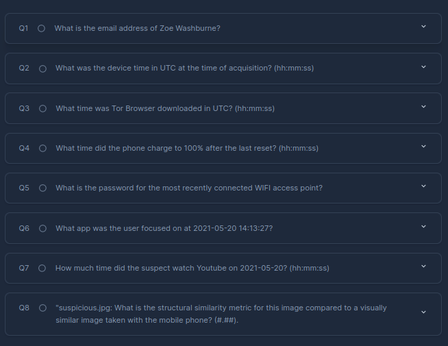
Q1 Answer: Download the Files: Before we begin, let's download the necessary files. We'll be working with these files throughout the process. Exploring the Structure: Now, let's take a closer look at the downloaded files to understand where to find the information we need. This will give us a roadmap for locating the specific requirements. To find email addresses, we'll target the contact database. I'll be using DB Browser for SQLite to analyze its contents. The Agent Data directory contains a SQLite database named "Contacts3.db"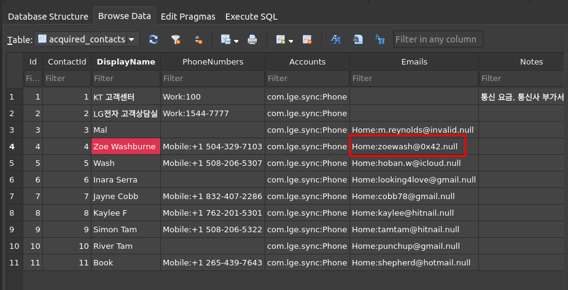
Q2 Answer: This one is straight forward too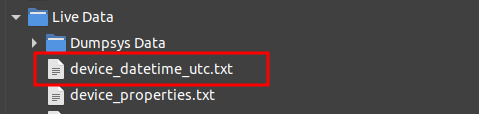
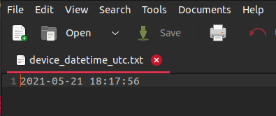
Q3 Answer: The Agent Data folder contains a SQLite database named "downloads.db"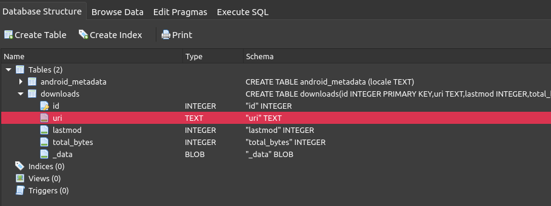
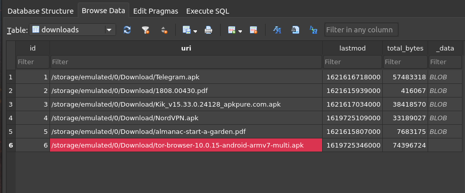
To convert the time, we will be using the following website:https://www.epochconverter.com
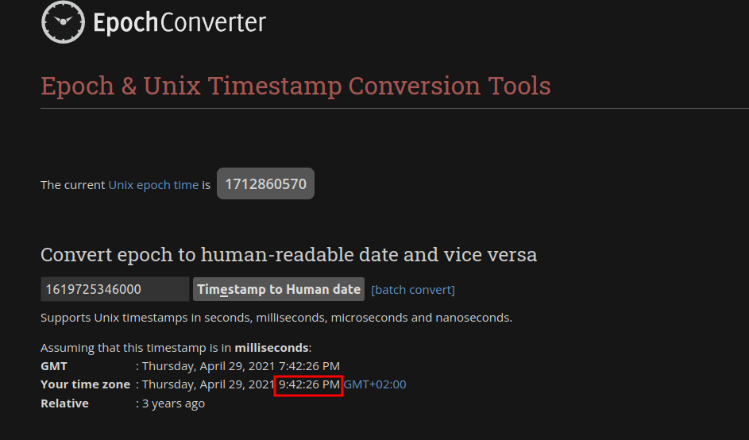
Q4 Answer: Another technique involves using grep with the following arguments:- -r: This option tells grep to search recursively within directories. It will search the current directory and all subdirectories for matching files.
- -l: This option instructs grep to only list the filenames containing the pattern. It won't display the actual matching lines within the files.
- -i: This option makes the search case-insensitive.
So this will help us for text searching in files.
For example i want to find files that have reset word and related to any battery file:
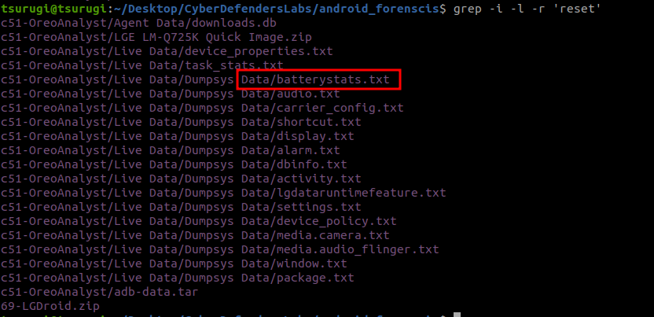
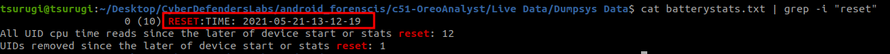
Now that we've identified a reset time mentioned in the text file, let's go back and examine the surrounding context for further insights.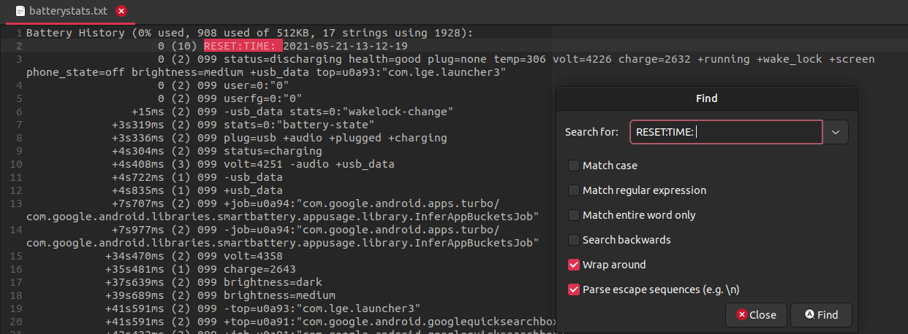
we will notice the battery has status when it was 0%, charging and full at the bottom as shown: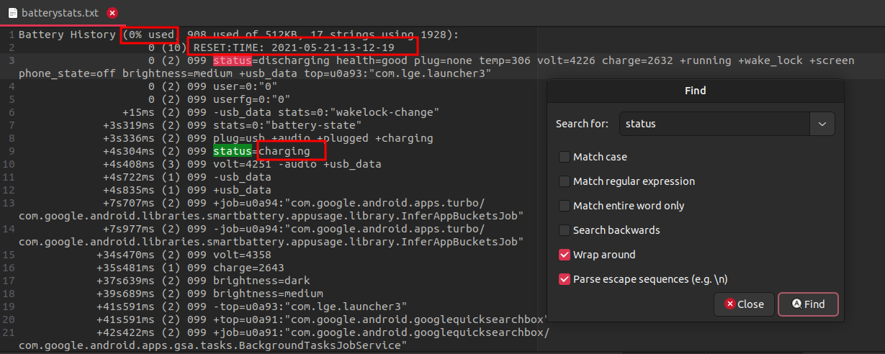
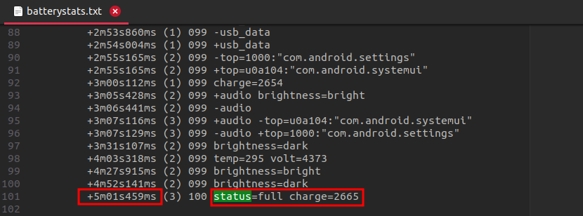
Here it took 5 minutes and 1 second till fully charging. So, the answer would be: 13:12:19 + 00:05:01 = 13:17:20 Q5 Answer: This one is hard and I did little bit research to solve it, here's how: Firstly, I wanted to get the WIFI information by doing the below but couldn't get the password: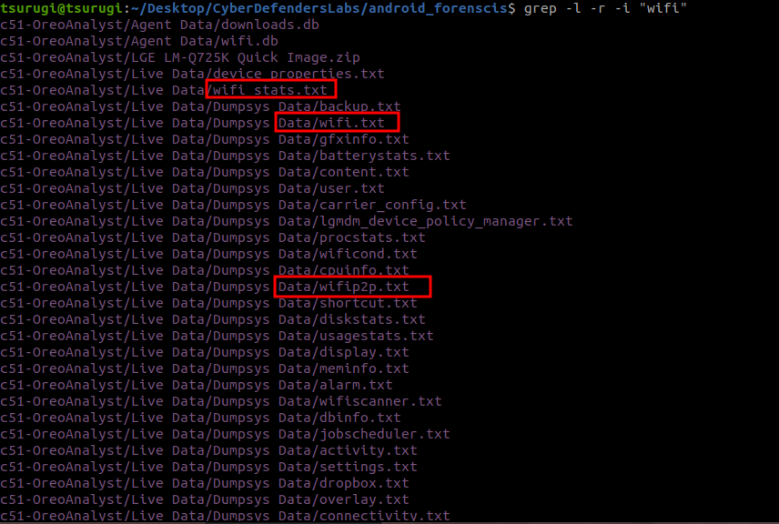
Found two possible locations for the password as shown:Stack Overflow: Where does Android store WiFi settings?
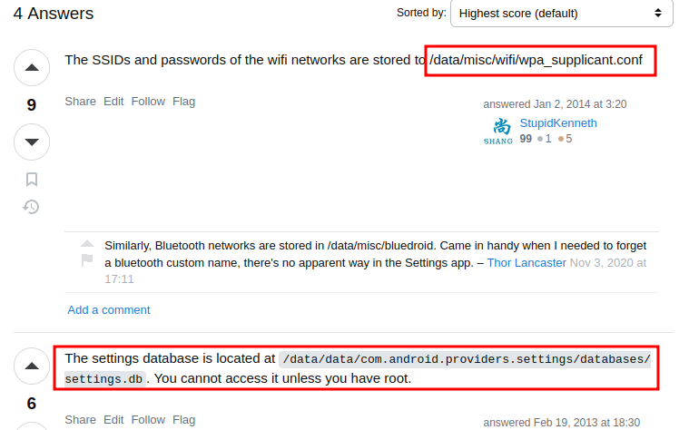
So it's somewhere in Data Path and here found the following: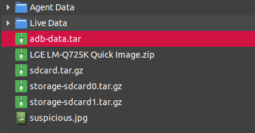
By unzipping it, found the a similar paths to the second possible location: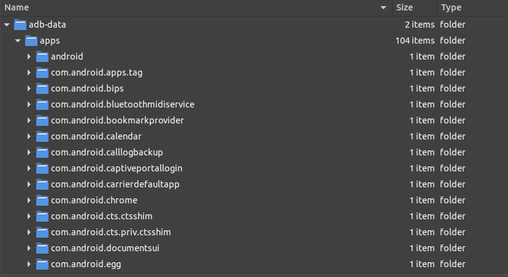
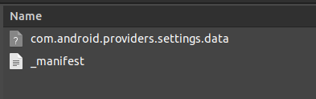
By opening it with VIM: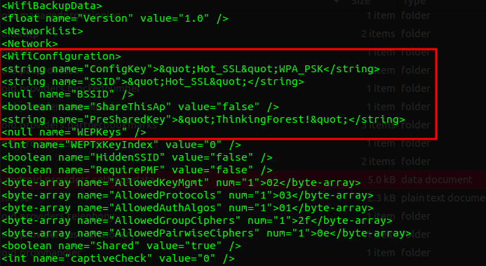
Great! We here were able to find the WIFI name but I wasn't sure which is the password, so by searching about WPA_PSK so as to understand its mechanism and decide which is the password from what we found.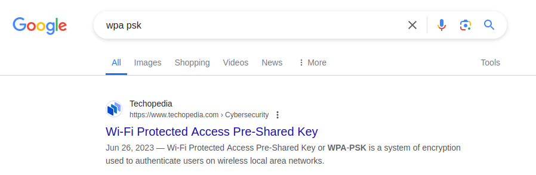
Techopedia: WPA-PSK Definition
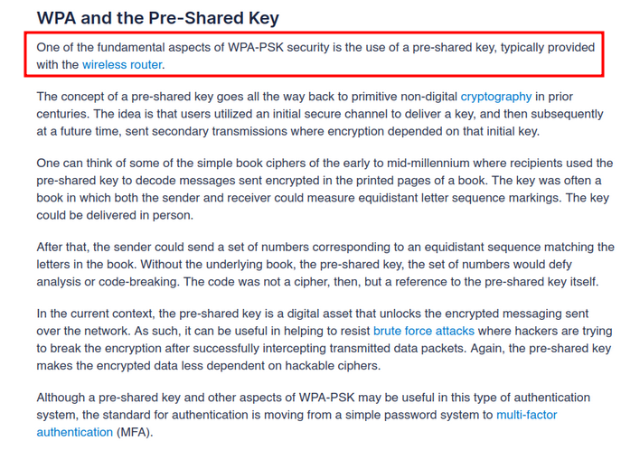
So from this we can conclude that the password is the PreSharedKey. Q6 Answer: Let's use the grep: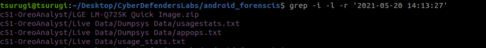
Here the mentioned date appears at these files and by searching at them, we find: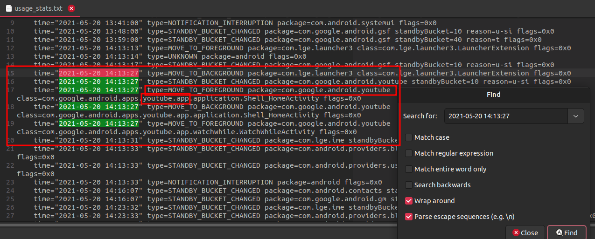
Q7 Answer: Again using grep: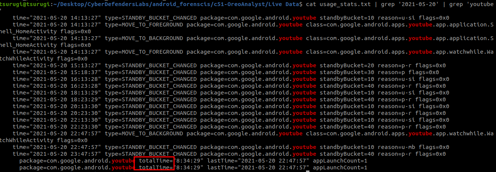
total time isn't the answer and the hint shows that we should focus on the difference between the foreground of background time: 22:47:57 - 14:13:27 Q8 Answer: We find the original image after unzipping sdcard then DCIM then Camera directory. The purpose of the question to SSIM which is an important metric for image similarity and it can be helpful to detect image forgery or potential manipulation. By using the code provided in the hint: How to calculate SSIM with Python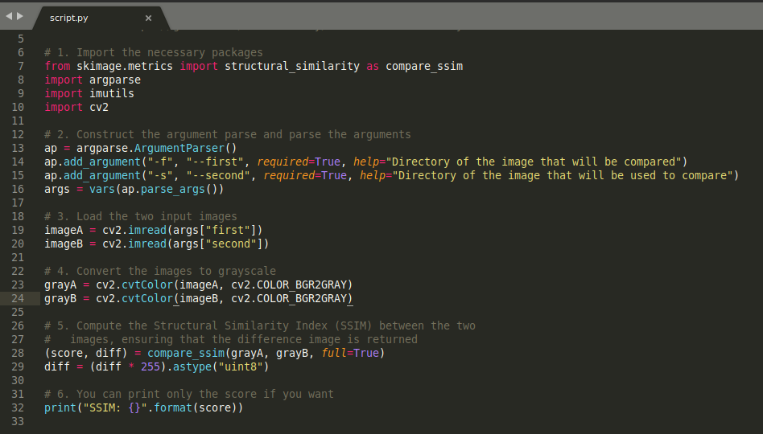
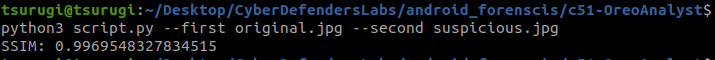